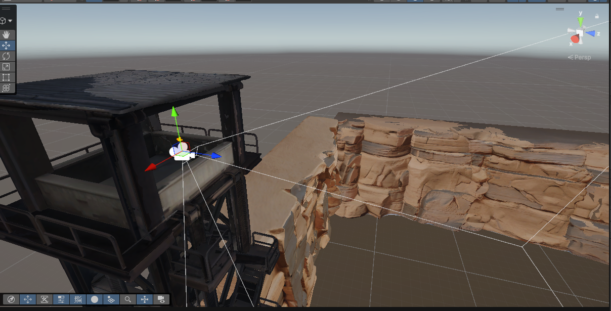
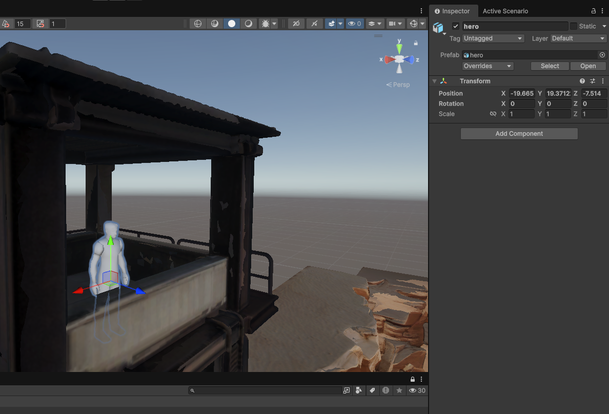
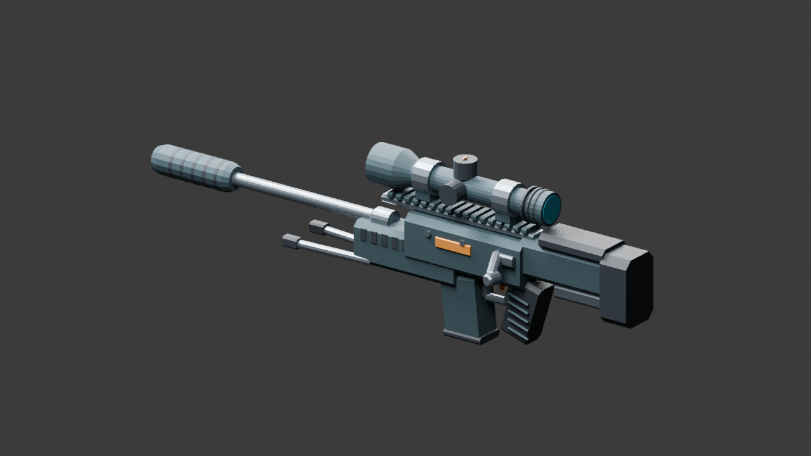
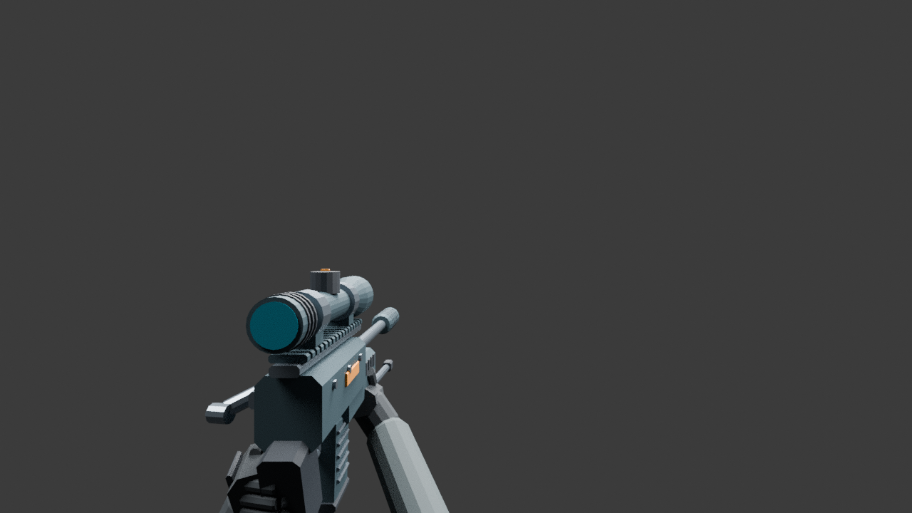

Three original Unity captures show the gameplay and tower-placement context. Two separate Blender renders preview the authored replacement rifle. Click any image to enlarge it; the preview includes original-size and download controls.
These are development captures, including Unity editor controls. They are not finished-game marketing images or evidence of a completed multiplayer match. The raw pixels are preserved; no rendering or texture improvements have been invented.
Local Game view
Textured runner in the canyon
The production runner is visible in third person, with the tower ahead and a large boulder on the route. Sparse cover and mostly bare ground are visible current limitations. The still frame confirms this view, not walking animation, collision, score correctness or networking.Download original runner captureUnity Scene view reference
The covered upper tower platform

An editor reference for the covered upper platform and its relation to the canyon. The transform gizmo and camera-frustum lines are editing aids. This image does not prove the production player's final spawn, capsule clearance or gameplay sightline.Download original tower referenceReference object, not final spawn proof
Hero reference inside the tower

This selected raw hero supplied placement context. Its pale editor appearance is not evidence that the production hero lost its texture. Its object pivot and Inspector coordinates are not the later measured production feet position. The earlier native tool reported feet (−20.343570, 19.451090, −8.953053), eye Y 21.10109 and yaw 352.422°. The later saved marker in e8099cd is (−20.343573, 19.451902, −7.34), with interior support enabled. This older image proves neither the new position nor its gameplay acceptance.Download original hero reference
Prepared rifle art
These are actual Blender renders of the same authored geometry intended for the replacement rifle tool. They are art previews, not Unity screenshots, native import results or gameplay proof. The production prefab has not been shown using them.
Blender render · NOT Unity
Original Kestrel rifle model

The authored rifle geometry and material palette in Blender. This confirms the preview asset exists; Unity-native generation, import, material appearance, grip fit and gameplay integration remain unverified.Download original Blender rifle previewBlender composition · NOT Unity
First-person rifle and gloves

A same-source first-person composition for reviewing the held weapon and gloved presentation. There is no Unity canyon, HUD or game camera in this render. Native unscoped framing, scope transitions, anatomy, world-held fit and remote visibility still require review.Download original Blender first-person preview
Provenance and credits
Captures supplied for the owner's SnipersAim progress record on 19 October 2026. Source: SheesshhOfficial / SnipersAim and its native Unity working session. Repository artwork and third-party asset rights remain with their respective creators. No unverified asset creator or license has been asserted.
Unity source names: game-1.png, game-2.png and marker.png. The original rifle renders are kestrel_art_BLENDER_NOT_UNITY.png and kestrel_first_person_BLENDER_NOT_UNITY.png under the game project’s WorkInProgress/Previews. The rifle geometry was authored for this project. The asset manifest records byte-preserving copies and checksums. Older rooftop/white-rifle and cluttered retry captures were not selected; their limitations remain documented in the taskboard.